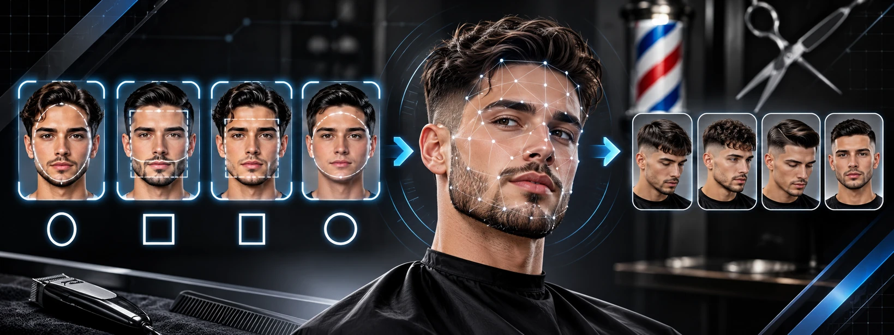
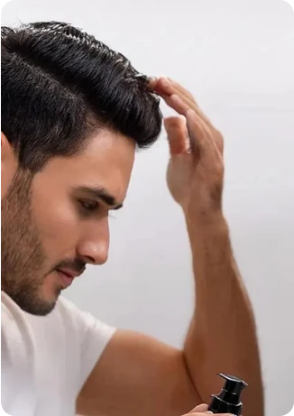

El problema
El cliente desconoce la estructura morfológica de su rostro y no sabe qué corte le favorece.
Impacto: la carga de decidir pasa al barbero, la atención se retrasa y el usuario queda insatisfecho.
Clasificación de la forma del rostro masculino: tres métodos de transfer learning evaluados y comparados.

El cliente desconoce la estructura morfológica de su rostro y no sabe qué corte le favorece.
Impacto: la carga de decidir pasa al barbero, la atención se retrasa y el usuario queda insatisfecho.
Clasificación objetiva del rostro en cuatro morfologías masculinas mediante deep learning.
Salida: recomendación automática de uno a dos cortes ideales con un motor de reglas.

Construir una herramienta que clasifique cuatro tipos de rostro masculino y aplique reglas de asociación directa para sugerir los cortes más adecuados.
Aporte clave: enfoque 100 % masculino, con aplicación comercial real en barberías.
Referencia: el artículo de Ji reporta 92.32 % de accuracy, por encima de DenseNet y VGG16.
Sin aumento de datos: decisión basada en el artículo VISCial, para no deformar los contornos faciales.
Aumento restrictivo: flip, rotación de 4° y zoom de 10 %, para no alterar la geometría del rostro.
1,281 imágenes balanceadas de datasets públicos y recolección propia en Pinterest, homogeneizadas para los tres métodos.
| Método | Partición | Test |
|---|---|---|
| MTCNN + FaceNet | 70 / 15 / 15 % | 192 |
| VGG16 | 1,022 train/val (80/20) | 327 |
| InceptionV3 | 1,022 train/val (80/20) | 327 |
Las 327 imágenes de test quedaron aisladas del entrenamiento. FaceNet usó su propia partición estratificada de 48 imágenes por clase.
| MTCNN + FaceNet | VGG16 | InceptionV3 | |
|---|---|---|---|
| Entrada | Recorte MTCNN, 160 × 160 | Recorte dlib, 224 × 224 | Recorte dlib, 299 × 299 |
| Preentrenamiento | VGGFace2 (rostros) | ImageNet | ImageNet |
| Entrenamiento | Backbone + cabeza | Solo la cabeza, una fase | Fase A congelada, fase B fine-tuning |
| Optimizador | AdamW: 2e-5 backbone, 1e-3 cabeza | Adam, 1e-4 | Adam: 1e-3 (A), 1e-5 (B) |
| Pérdida | CrossEntropy + Center Loss (λ = 0.01) | No reportada | Categorical crossentropy |
| Batch / épocas | 32 / 60 máx. | 32 / 30 máx. | 32 / 25 (A), 30 (B) máx. |
| Regularización | Dropout 0.5, BatchNorm, weight decay 1e-2, label smoothing 0.1 | Dropout 0.5 | Dropout 30 % |
| Aumento de datos | Flip, rotación ±10°, zoom, ColorJitter, RandomErasing | Ninguno | Flip, rotación 4°, zoom 10 % |
| Callbacks | ReduceLROnPlateau, Early Stopping (8), ModelCheckpoint | Early Stopping (5), ModelCheckpoint | Early Stopping (5 y 6), ModelCheckpoint |
| Métricas | Accuracy, P, R y F1 por clase, matriz de confusión, brecha train−val | Accuracy y 7 métricas por clase: CA, CE, SV, SF, FPR, P, F1 | Accuracy, F1 macro, matriz de confusión |
| Clase | Precision | Recall | F1-score | Support |
|---|---|---|---|---|
| Redondo | 0.936 | 0.917 | 0.926 | 48 |
| Rectangular | 0.863 | 0.917 | 0.889 | 48 |
| Ovalado | 0.904 | 0.979 | 0.940 | 48 |
| Cuadrado | 0.952 | 0.833 | 0.889 | 48 |
| Accuracy | 0.911 | 192 | ||
| Macro avg | 0.914 | 0.911 | 0.911 | 192 |
| Weighted avg | 0.914 | 0.911 | 0.911 | 192 |
44.6 % de accuracy en test, siete puntos sobre InceptionV3 base, con una brecha de 0.470 entre entrenamiento y prueba: el modelo memorizó el dataset local.
| Método | Accuracy | F1 macro | Preentreno | Ajuste fino |
|---|---|---|---|---|
| MTCNN + FaceNet | 91.1 % | 0.911 | VGGFace2 | Sí |
| InceptionV3 | 55.7 % | 0.55 | ImageNet | Sí, desde capa 249 |
| VGG16 | 44.6 % | No reportado | ImageNet | No |
Lectura correcta: FaceNet se evaluó sobre 192 imágenes y los otros dos sobre las mismas 327. La ventaja de 35.4 puntos es amplia, pero no proviene de un test idéntico; se confirmará en la siguiente etapa.
MTCNN + FaceNet obtuvo el mejor desempeño en accuracy y en F1 macro. El preentrenamiento en rostros marca la diferencia frente a ImageNet.
Elegido por su rendimiento experimental: 91.1 % de accuracy y F1 macro de 0.911, a 1.2 puntos del 92.32 % del artículo de Ji.
Cada desarrollo está disponible para ejecutarse. Abre el enlace o escanea el código.